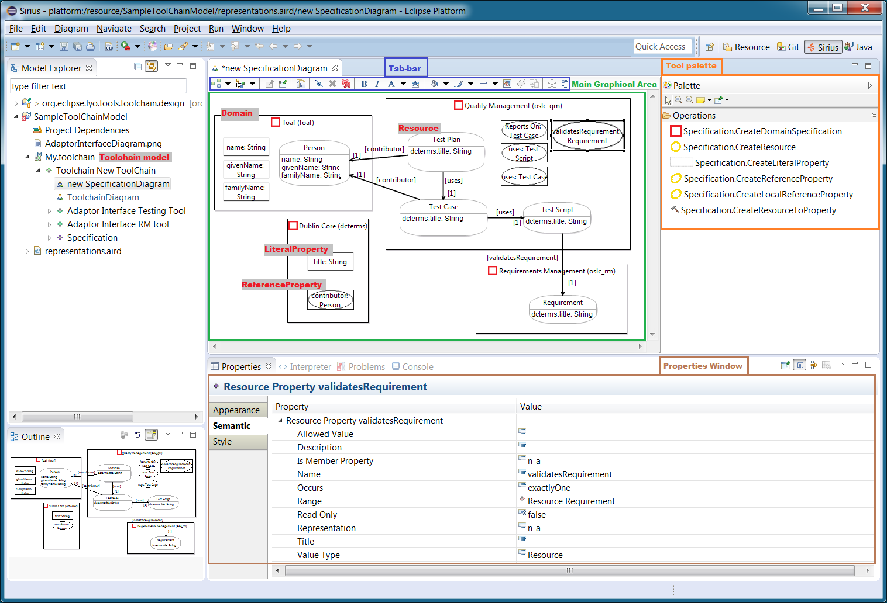

Introduction
With Lyo Designer, you can graphically model your domain specifications according to the OSLC Core specification. A Domain Specification defines the types of resources, their properties and relationships, according the OSLC Core Specification and the Resource Shape constraint language.
From such a model, you can produce a library of Java classes, with the appropriate Lyo OSLC4J annotations to reflect the defined OSLC Resources, and their properties. These classes can then be further used in the development of OSLC applications using the Lyo OSLC4J SDK.
A domains model can also be imported into a toolchain model, to model a complete toolchain, as well as a single server and/or client. (see Toolchain Modelling Workshop for details).
Table of Content:
- Eclipse Setup
- Create a Modelling Project
- Model OSLC Domain Specifications
- Setup OSLC4J projects
- Generate OSLC4J Java code
- Browsing the generated code
Bug Reporting
Please send any bug reports, questions or suggestions to the project mailinglist lyo-dev@eclipse.org, or report Bugs/features on Github
Eclipse Setup
First, make sure your Eclipse environment is setup as expected for general OSLC4J development, as instructed in Eclipse Setup for Lyo-based Development
Then, make sure you install Lyo Designer
Create a Modelling Project
Projects layout
You will need to create an Eclipse (modelling) project within which you will create the specification model. In this model, you will potentially define a number of domain specifications.
You may also choose to distribute the domain specifications into a number of different Java libraries, each of which is itself an Eclipse project.
So, a recommended structure of your projects is the following:
oslc-project/
oslc-model-project/
domain1-project/
domain2-project/Where
- The top
oslc-projectdirectory may be a git repository root oslc-model-projectis the Lyo Designer modelling project, where your model is managed.- each
domain-projectcontains the java classes corresponding to one or more domain specifications, generated from the definitions inoslc-model-project.
Create a Domain Specification Modelling Project
- In your Eclipse workspace, switch to the Modeling perspective
- Create a new modelling project
- Select New > Modelling Project
- Choose a project name
- Create a Specification model
- Right click the newly created project, and select New > other…
- In the Wizards window, navigate and select Lyo Designer > OSLC Domain Model, then press Next
- choose a suitable file name (say domain.xml) for the model, then press Next
- Set Model Object to Specification
- Press Finish
- Right-click the project again, and select Viewpoints selection
- select ToolChainViewpoint
- Press OK
- View the initial diagrams
- In the Model Explorer, by pressing the triangle/arrow to the left of the domain.xml file , expand the file structure until the
SpecificationDiagram entry is visible.
- Note: Do not double-click on the file. This will instead open the file in an xml editor.
- You can now open and edit any of these views, by double-clicking on the desired entry.
- In the Model Explorer, by pressing the triangle/arrow to the left of the domain.xml file , expand the file structure until the
SpecificationDiagram entry is visible.
Note: Lyo Designer also allows you to break up the model into a set of modelling projects for more complicated organisation. See Handling Large Models for more details.
Model OSLC Domain Specifications
You are now ready to graphically specify the OSLC domain specifications.
In the SpecificationDiagram, you can define a set of domain specifications, within which you define Resources and Resource Properties.

- First make sure you have an overview of Lyo Designer's modelling capabilities through the General Lyo Modelling Instructions.
- Now, follow the Domain Specification modelling instructions (Only this particular section) from the general Lyo Designer manual.
- Finally, validate your model by following the validation instructions (Only this particular section) from the general Lyo Designer manual.
Setup OSLC4J projects
Once the Specification model is complete and validated, you can choose to generate the set of Java classes, with the appropriate Lyo OSLC4J annotations to reflect the defined OSLC Resources, and their properties. These classes can then be further used in the development of OSLC applications using the Lyo OSLC4J SDK.
It is no longer necessary to manually create the Eclipse OSLC4J projects for the Java classes, since these are created by the generation process.
- Use the tools pallet to create a Specification Configuration, placing it in the Specification Diagram (and not inside any specific Domain Specification). This element lets you configure the Specification model's generation settings. The element consists of two sets of configurations as follows:
- General: Contains the general generation settings:
- Files Base Path: The path where the generated files will be generated. Set the path relative to your current location, which is the modelling project.
- Java Base Package Name: the name of the base Java root package from which the code of your adaptor will be generated.
- Project Configuration: relating to the generation of the development project-specific files, such as the Pom.xml and web.xml files
- Do Not Generate Project Configuration Files: Set this property if you don't want the automatic generation of these files.
- Group Id, Artifact Id & Version: define the maven project settings.
- Lyo Version: Define the version of Lyo libraries to use.
- General: Contains the general generation settings:
- (Optional) If you want to override the genration settings for a specific Domain Specification, you can create a Specification Configuration for any specific Domain Specification (by placing it in the Domain Specification).
Generate OSLC4J Java code
You are now ready to generate the code:
- Right-click inside the Specification Diagram (without selecting any Domain Specification) and select the context menu item OSLC Lyo Designer > Generate Specification Java Code
- You will now be prompted to enter the base path to which the java classes are to be generated.
- NOTE: Alternatively, to avoid such prompt, you can define this path through a generationPath property in a generator.properties file. The properties file is expected in the same location as the model file.
- Press OK
- Once successful, you will be prompted with a dialog that confirms generation completion.
Notes:
- Lyo Designer supports an incremental development of the adaptor model. Any manual changes to the generated code (within designated placeholders) are maintained upon a subsequent change in the adaptor model, and resulting code re-generation.
- Lyo Designer allows you to generate different parts of the code into different projects (or file locations). This allows for better reuse of generated code packages. See Controlling the generation parameters of Domain Specification(s) for more details.
Browsing the generated code
For each OSLC-resource in each of the Domain Specifications, a corresponding Java class is is produced. The class includes the appropriate OSLC annotations, instance attributes, getters, setters, etc.
The generated classes contain placeholders that allow the developer to insert additional code and hence modify the generated default code where necessary. such manual code remains intact after subsequent generations, if modifications are placed within the designated placeholders. This allows for the incremental development of the model, and its resulting code.
To illustrate, open a class file, and note the following placeholder:
// Start of user code imports
// End of user codeAny code entered between these two lines of code is maintained across subsequent generations. In this example, the placeholder is intended for developer-specific imports, but any Java code can be inserted.